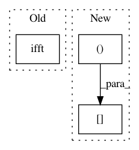

7bca836f56bcb10aaca45ded2088cad722a3416b,librosa/__init__.py,,istft,#Any#Any#Any#Any#,147
Before Change
for b in xrange(0, hop_length * (num_frames), hop_length):
ft = d[:, b/hop_length]
ft = numpy.concatenate((ft, numpy.conj(ft[(n_fft/2 -1):0:-1])), 0)
px = numpy.real(scipy.ifft(ft))
x[b:(b+n_fft)] += px * window
pass
After Change
ft = numpy.concatenate((ft.conj(), ft[-2:0:-1] ), 0)
px = numpy.fft.ifft(ft, axis=0).real
x[b:(b+n_fft)] = x[b:(b+n_fft)] + window * px[:,0]
pass
return x
In pattern: SUPERPATTERN
Frequency: 3
Non-data size: 3
Instances
Project Name: librosa/librosa
Commit Name: 7bca836f56bcb10aaca45ded2088cad722a3416b
Time: 2013-03-09
Author: brm2132@columbia.edu
File Name: librosa/__init__.py
Class Name:
Method Name: istft
Project Name: grrrr/nsgt
Commit Name: d6df6857ff7493bfb4818241cf5edb30fe751e97
Time: 2011-03-30
Author: gr@grrrr.org
File Name: src/nsgtf.py
Class Name:
Method Name: nsgtf
Project Name: acoular/acoular
Commit Name: 97a543976472f88b7922cc8f8ef3d7c0b6cd3dee
Time: 2012-02-06
Author: sarradj@tu-cottbus.de
File Name: beamfpy/sources.py
Class Name: PointSource
Method Name: result